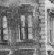

Roughing It
1872

picture courtesy of "Mark Twain in His Times"
picture courtesy of "Mark Twain in His Times"
 |
Virginia City, NV (source of inspiration) "Four or five years ago a rightous Vigilance Committee in your city hanged a casual acquantance of mine named Slade...Now I am writing a book...& as the Overland journey has made six chapters of it thus far & promises to make six or eight more, I thought I would just rescue my late friend Slade from oblivion & set a sympathetic public to weeping for him...& the object of this letter is to beg of you to ask of someone connected with your city papers to send me a Virginia City newspaper of that day." letter to the Postmaster of Virginia City, 9.15.1870, Buffalo, NY, as quoted in Mark Twain's Letters, Vol. 4 |
|  | San Francisco, CA (source of inspiration) "One Sunday afternoon I saw some hoodlums chasing and stoning a Chinaman...and I noticed that a policeman was observing this performance with an amused interest--nothing more. He did not interfere. I wrote up the incident with considerable warmth and holy indignation." Autobiography, 131 |
| Angel's
Camp, CA (source of inspiration) "Mountaineers in habit telling same old experiences over & over again in these little back settlements. Like Dan's old Ram, which he always drivels about when drunk." journal entry from January 1865, as quoted in Mark Twain's Notebooks and Journals, Vol. 1 "Jim [Gillis] stood before the fire and reeled it [a story] off with the easiest faculty, inventing its details as he went along and claiming as usual that it was all straight fact, unassailable fact, history pure and undefiled. I used another of Jim's inventions in one of my books, the story of Jim Baker's cat, the remarkable Tom Quartz." Autobiography, 152-153 |
|
| Buffalo, NY (site of actual writing) "I am driveling along tolerably fair on the book--getting off from 12 to 20 pages a day. I am writing so carefully that I'll never have to alter a sentance, I guess, but it is very slow work. I like it well, as far as I have got. The people will read it." letter to Elisha Bliss, 10.13.1870, Buffalo, NY, as quoted in Mark Twain's Notebooks and Journals, Vol. 1 |
|
 |
"Quarry Farm", Elmira, NY (site of actual writing) "I am going to shut myself up in a farm-house alone, on top an Elmira hill, & write--on my book. I will see no company, & worry about nothing...When I get to Elmira I will look over the next chapters & send something--or, failing that, will write somthing--my own obituary I hope it will be." letter to Elisha Bliss, Jr., 3.17.1871, Buffalo, NY, as quoted in Mark Twain's Letters, Vol. 4 |
Back to Innocents Abroad | On to Tom Sawyer